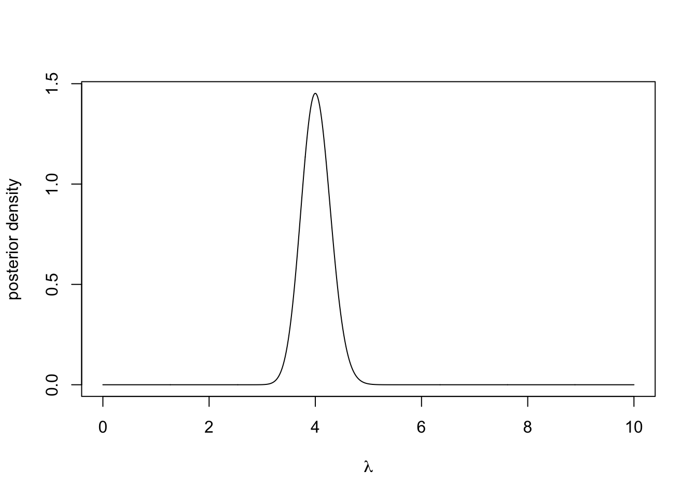
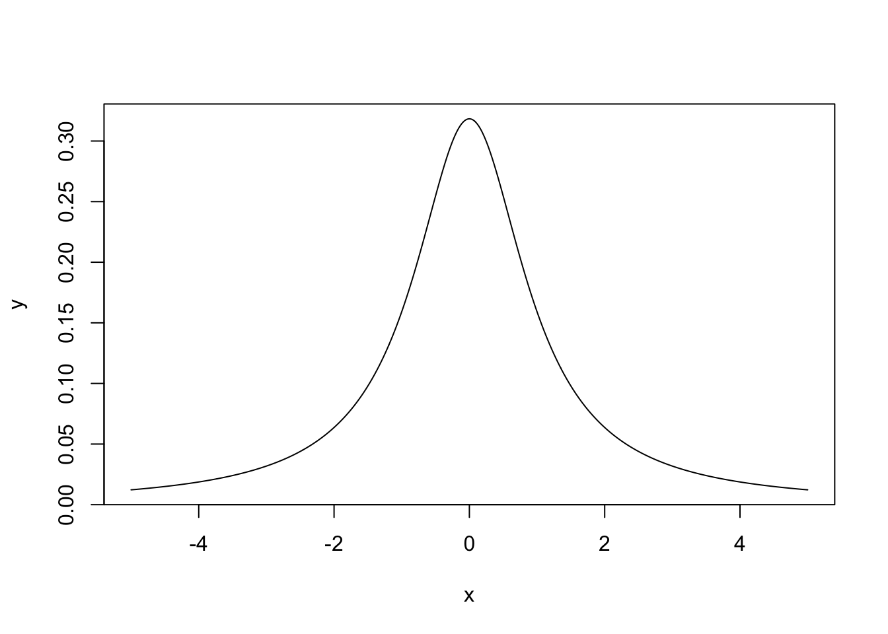

Chapter 4 Sampling
4.1 Uniform Random Numbers
What we won’t be doing in this module is generating true uniform random numbers. This is incredibly difficult and usually requires lots of expensive hardware. This is because computers aren’t good at being random, they require algorithmic instructions. True random number generation often uses physical methods, such as the radioactive decay of atoms, or atmospheric noise.
Throughout this module, we will be using R’s built in random number generation. This is a pseudo random number generator that has excellent random properties, but will eventually repeat. A basic random number generation tool that we will repeatedly use in the module involves sampling from a uniform distribution on the unit interval, which can be done in R using
runif(1, 0, 1)## [1] 0.79797424.2 Inverse Transform Sampling
Suppose we want to sample from a non-uniform one-dimensional distribution. The inverse transform theorem allows us to do this using the distribution’s inverse function.
Definition 4.1 Let \(X\) be a real-valued random variable with a distribution function \(F\). Then the inverse function of a distribution function \(F\), denoted \(F^{-1}\), is defined for all \(u \in (0, 1)\) by \[ F^{-1}(u) = \inf\{x \in\mathbb{R} : F(x) > u\}. \]
Theorem 4.1 Let \(F :\mathbb{R} \rightarrow [0, 1]\) be a continuous distribution function, \(U \sim U[0, 1]\) and \(Y = F^{-1}(U)\). Then \(Y\) has distribution function \(F\).
Proof. We have \[ \mathbb{P}(Y \leq a) = \mathbb{P}(F^{-1}(U) \leq a) = \mathbb{P}(\inf\{x \in\mathbb{R} : F(x) > u\} \leq a). \] Since \(\inf\{x \in\mathbb{R} : F(x) > u\} \leq a\) can only hold if \(F(a) \geq U\), we have \[ \mathbb{P}(Y \leq a) = \mathbb{P}(F(a)\geq U) \] As \(U \sim U[0, 1]\), we have \(\mathbb{P}(F(a)\geq U) = F(a)\).
This theorem says that if we have a random variable \(U \sim U[0, 1]\) and we want to get \(Y \sim F\), then we can use \(F^{-1}(U)\). Viewing this theorem graphically can provide a much more intuitive understanding.
Example 4.1 We would like to sample from an exponential distribution with rate \(\lambda\), i.e. \(Y ~ \sim \hbox{Exp}(\lambda)\). The density function is given by
\[ \pi(y \mid \lambda) = \begin{cases} \lambdae^{\lambday} & y \geq 0 \\ 0 & \text{otherwise.} \end{cases} \]
The distribution function can be derived by \[\begin{align*} F(y \mid \lambda) &= \int_0^y \lambda e^{\lambda t}\,dt \\ & = 1 - e^{\lambda y}. \end{align*}\] Finally, the inverse function is given by \[ F^{-1}(y \mid \lambda) = -\frac{1}{\lambda}\log(1-y). \] Therefore, if \(U \sim U[0, 1]\), then it follows that \(-\frac{1}{\lambda}log(1-U) \sim \hbox{Exp}(\lambda)\).
The R code below generates a plot to show this (with \(\lambda = 0.5\)). We can plot the CDF for most one parameter distributions straightforwardly. We can think of this theorem as allowing us to sample a point on the y-axis and then computing the quantile this corresponds to.
set.seed(12345) # to reproduce
y <- seq(0, 10, 0.01) #Show on the interval [0, 5]
f <- 1 - exp(-0.5*y) #Construct the cumulative density function (CDF)
plot(y, f, type ='l', xlab = "y", ylab= "CDF")
#Sample u
u <- runif(1)
#Get the corresponding y value
f.inv <- -2*log(1-u)
#plot
segments(x0 = 0, y0 = u, x1 = f.inv, y1 = u, lty = 2)
segments(x0 = f.inv, y0 = 0, x1 = f.inv, y1 = u, lty = 2)
text(x = f.inv, y = -0.01, expression(F[-1](U)), col = 4)
text(x = -.1, y = u, "U", col = 4)
4.3 Rejection Sampling
We now have a way of sampling realisations from distributions where we can analytically derive the inverse distribution function. We can use this to sample from more complex densities, or simple densities more efficiently. Rejection sampling works by sampling according to a density we can sample from and then rejecting or accepting that sample based on the density we’re actually interested in. The plot below shows an example from this. We would like to generate a sample from the distribution with the curved density function, which is challenging. Instead, we find a distribution whose density function bounds the one we are interested in a sample from that. In this case we can use the uniform distribution. Once we have generated our sample from he uniform distribution, we choose to accept or reject it based on the distribution we are interested in. In this case we reject it.

Suppose we want to sample from a density \(\pi\), but can only generate samples from a density \(q\). If there exists some constant \(c > 0\), such that \(\frac{\pi(y)}{q(y)} \leq c\) for all \(y\), then we can generate samples from \(p\) by
Sampling \(Y \sim Q\)
Sampling \(U \sim U[0, 1]\)
Computing \(k = \frac{\pi(u)}{cq(y)}\)
Accepting \(y\) if \(U < k\) and rejecting otherwise.
This says draw sample a point \(y\) according to the density \(q\). Draw a vertical line at \(y\) from the x-axis to \(cq(y)\). Sample uniformly on this line. If the uniformly random sample is below \(q\), then accept it. Otherwise, reject it. The theory behind this is as follows. Suppose we sample some point y according to this algorithm and we want to work out its density \(f\), then \[ f(y) \propto q(y)\pi(U < k) = q(y)\frac{\pi(u)}{cq(y)} = \frac{\pi(u)}{c}. \] Therefore, \(f = p\).
Example 4.2 Suppose we want to sample from a distribution that has the density \[ \pi(y) = \begin{cases} \frac{3}{4}y(2-y), \qquad y \in [0, 2] \\ 0, \qquad \textrm{otherwise} \end{cases}. \] This has a maximum at \(\frac{3}{4}\). We choose \(p \sim U[0, 1]\) and \(c = \frac{3}{4}\). The R code below shows a pictorial version of how one sample is generated.
set.seed(1234) #to reproduce
M <- 3/4 #set M
y <- runif(1) #sample Y ~ Q
p <- 3/4*y*(2-y) #compute pi(y)
k <- p/(M*1) #compute k
u <- runif(1) #sample U ~ U[0, 1]
ifelse(u < k, 'accept', 'reject') #Accept if u < k## [1] "reject"#Create nice plot
a <- seq(0, 2, 0.01)
b <- 3/4*a*(2-a)
c <- M*rep(1, length(a))
plot(a, b, ylim = c(0, M), type = 'l')
lines(a, c)
segments(x0 = y, y0 = 0, x1 = y, y1 =3/4*y*(2-y) , lty = 2, lwd = 2)
segments(x0 = y, y0 =3/4*y*(2-y), x1 = y, y1 = M, lty = 2, col = 2, lwd = 2)
points(x = y, y = u, pch = 19) The plot also shows how the choices of \(M\) and \(q\) can make the sampling more or less efficient. In our example, the rejection space is large, meaning many of our proposed samples will be rejected. Here, we could have chosen a better \(q\) to minimise this space.
The plot also shows how the choices of \(M\) and \(q\) can make the sampling more or less efficient. In our example, the rejection space is large, meaning many of our proposed samples will be rejected. Here, we could have chosen a better \(q\) to minimise this space.
4.4 Markov Chain Monte Carlo
Markov Chain Monte Carlo (MCMC) is a class of algorithms that produce samples from a probability distribution. These methods combine the idea of rejection sampling with the theory of Markov chains. Before we set out the theory of Markov chains, we’ll go through an example to show how MCMC works.
Example 4.3 (Adapted from Statistical Rethinking 9) Consider an eccentric King whose kingdom consists of a ring of 10 islands. Directly north is island one, the smallest island. Going clockwise around the archipelago, next is island two, which is twice the size of island one, then island three, which is three times as large as island one. Finally, island 10 is next to island one and ten times as large.
The King wanted to visit all of his islands, but spending time on each one according to its size. That is he should spend the most time on island ten and the least on island one. Being climate conscious, he also decided that flying from one side of the archipelago to the other was not allowed. Instead, he would only sail from one island to either of its neighbors. So from island one, he could reach islands two and ten.
He decided to travel according to these rules:
At the end of each week, he decides to stay on the same island or move to a neighboring island according to a coin toss. If it’s heads he proposes moving clockwise, and tails anti-clockwise. The island he is considering moving to is called the proposal island.
To decided if he is going to move to the proposal island, the King counts out a number of shells equal to the number of size of the island. So if island five is the proposal island, he counts out five shells. He then counts out a number of stones equal to the size of the current island.
If the number of seashells is greater than the number of stones, he moves to the proposed island. If the number of seashells is less than the number of stones, he takes a different strategy. He discards the number of stones equal to the number of seashells. So if there are six stone and five seashells, he ends up with 6-5=1 stones. He then places the stones and seashells into a bag a chooses one at random. If he picks a seashell, he moves to the proposed island, otherwise if he picks a shell, he stays put.
This is a complex way of moving around, but it produces the required result; the time he spends on each island is proportionate to the size of the island. The code below shows an example of this over 10,000 weeks.
weeks <- 10000
island <- numeric(weeks)
current <- 10
for(i in 1:weeks){
## record current position
island[i] <- current
#Flip a coin to move to a propose a new island
proposed <- current + sample(c(1, -1), size = 1)
#Ensure he loops round the island
if(proposed < 1)
proposed <- 10
if(proposed > 10)
proposed <- 1
#Decide to move
p <- proposed/current
u <- runif(1)
if(u < p)
current <- proposed
}
#Plot results
par(mfrow = c(2, 1))
plot(island, type = 'l', xlab = "Week", ylab = "Island")
barplot(table(island)/weeks, xlab = "Island", ylab = "Proportion of time")
We can recognise several different statistical principles in this example. The King decides to move islands dependent on where he is currently, not based on where he has been previously (Markov property). He proposes an island to move to and accepts or rejects this decision based on some distribution (rejection principle). We are now going to describe some of the properties of Markov chains, including the Markov property.
4.5 Properties of Markov Chains
Definition 4.2 A sequence of random variables \(\{Y_1, Y_2, \ldots\}\) is a Markov chain if \(\mathbb{P}(Y_{n+1} \mid Y_{n}, \ldots, Y_1) = \mathbb{P}(Y_{n+1} \mid Y_{n})\). That is that distribution of the next state \(Y_{n+1}\) only depends on the current state \(Y_n\) and not any previous states.
Definition 4.3 The probability of transitioning from state \(i\) to state \(j\) in a Markov chain is given by \(p_{ij}\). The transition matrix for a Markov chain with \(N\) states is the \(N \times N\) matrix \(P\), where the \(\{i, j\}^{th}\) entry denoted by \(p_{ij}\) is probability is moving from state \(i\) to state \(j\).
These two properties make Markov chains nice to work with, especially the Markov property (Definition 4.2). Two other important definitions are
Definition 4.4 The period of a state \(i\) is given by \(d_i = \textrm{gcd}\{n > 0; p_{ii} > 0 \}\). A state is aperiodic if \(d_i = 1\). An aperiodic chain is a chain where all states are a periodic.
Definition 4.5 A Markov chain is irreducible if there exists an \(n \in \mathbb{N}\) such that \(\mathbb{P} (Y_n = i \mid Y_0 = j)\) for all pairs \(i\) and \(j\). In other words, it is possible to move from any state to any other state in a finite number of steps.
We can use these definitions to start working with distributions. Suppose, the state we start at is drawn from some distribution \(Y_1 \sim \boldsymbol{q}\). Then the distributions of the second state \(Y_2\) depends on the distribution of \(Y_1\) and the transition probabilities \[ \mathbb{P}(Y_2 = j) = \sum_i q_ip_{ij}. \] If we denote the distribution of \(Y_2 \sim \boldsymbol{q}^{(2)}\), then we can write it in terms of the transition matrix \(\boldsymbol{q}^\prime = \boldsymbol{q}P\). Now suppose we would like the distribution of \(Y_3 \sim \boldsymbol{q}^{(3)}\), thanks to the Markov property, this is the distribution for \(Y_2\) multiplied by the transition matrix, so \(Y_3 \sim qP^2\). Inductively, \(P_k \sim qP^{k-1}\). To use Markov chains to sample from distributions, we need to identify the Eigenvalues of the transition matrix.
Proposition 4.1 A transition matrix \(P\) always has at least one eigenvalue equal to one.
Proof. The columns of \(P\) sum to 1 as they are probability distributions. Therefore, \(1\) is an eigenvalue.
Definition 4.6 If a transition matrix \(P\) has a unique Eigenvalue that takes the value 1, there is a unique distribution \(\pi\) such that \[ \pi P = \pi. \] This distribution \(\pi\), is known as the stationary distribution.
This important concept underpins MCMC methods. It says that no matter where we start our chain, we’ll eventually end up sampling states according to the distribution \(\pi\). It make take a long time to reach the stationary distribution, but it will eventually get there.
In order to check whether our Markov chain will converge to a stationary distribution, we need to check:
the Markov chain is aperiodic,
the Markov chain is irreducible, and
that there exists a unique distribution \(\pi\) such that \(\pi P = \pi\).
Example 4.4 In Example 4.3, the King wanted to visit the islands according to how large they are. We can think of the islands as the states and the stationary distribution as \(p(Y = i) \propto i\). The eccentric method the King used allowed him to construct a transition matrix for an aperiodic Markov chain. He also never visited islands regularly using this method.
When designing a Markov chain, it is usually straightforward to design one that meets conditions one and two. Condition three is more difficult to prove, but for some chains it is possible to show they satisfy detailed balance.
Definition 4.7 The Markov chain with transition matrix \(P\) satisfies the detailed balance equation with respect to the distribution \(\pi\) if \[ \pi_i p_{ij} = \pi_j p_{ji}. \]
Theorem 4.2 (Detailed Balance) Let \(P\) be a transition matrix that satisfies detailed balance with respect to the distribution \(\pi\). Then \(\pi P = \pi\).
Proof. The \(j^{th}\) row of \(\pi P\) is \[\begin{align*} \sum_{i} \pi_i p_{ij} & = \sum_{i} \pi_j p_{ji} \quad \textrm{(detailed balance)} \\ & = \pi_j \sum_{i} p_{ji} \\ & = \pi_j.\qquad \textrm{(probaility sums to 1)} \end{align*}\] Hence \(\pi P = \pi\).
The section has shown us that we can use a Markov chain theory to simulate from a probability distribution \(\pi\). All we need is for the Markov chain to be irreducible, aperiodic, and for the transition matrix to satisfy \(\pi P = \pi\). This provides the foundation theory for MCMC and allows us to sample from a posterior distribution \(\pi\). What it doesn’t tell us is how to design the Markov chain, and that is what the next sections deal with.
4.6 Metropolis-Hastings
We’re now going to look at MCMC algorithms. The first algorithm we are going to look at is the Metropolis-Hasting algorithm. This is a useful algorithm if we cannot sample directly from the posterior distribution and if the conditional distributions do not have a closed form. The Metropolis-Hastings algorithm is like the island example we saw earlier. At each iteration, we propose a new sample and then accept or reject it based on the likelihood function, the prior and how likely we are to propose this new sample given the current one.
Suppose we want to sample from the posterior distribution \(\pi(\theta \mid \boldsymbol{y})\). The Metropolis-Hastings works as follows:
Set the initial value \(\theta^{(0)}\).
Set \(i = 1\).
Propose a new value of \(\theta'\) from some distribution \(q\)
Accept \(\theta'\) with probability \[ p_{\textrm{acc}} = \min\left\{\frac{\pi(\theta' \mid \boldsymbol{y})}{\pi(\theta \mid \boldsymbol{y})}\frac{q(\theta \mid \theta')}{q(\theta' \mid \theta)}, 1\right\}. \]
Repeat steps 3 to 4 for \(i = 2, \ldots, M\).
There are two parts to the acceptance probability in step 4. The first is the posterior ratio, similar to saying the likelihood of \(\theta'\) given the observed data over the likelihood of \(\theta\) given the data. The second is the proposal ratio. It is similar to saying the likelihood of proposing \(\theta\) given the current value \(\theta'\), over the likelihood of proposing \(\theta'\) given the current value \(\theta\).
In practice, we don’t need to evaluate the full posterior distribution. Recall \[ \pi(\theta \mid \boldsymbol{y}) = \frac{\pi(\boldsymbol{y} \mid \theta) \pi(\theta)}{\pi(y)} \] As the the denominator doesn’t depend on \(\theta\), it cancels in the ration. The ratio becomes \[ \frac{\pi(\theta' \mid \boldsymbol{y})}{\pi(\theta \mid \boldsymbol{y})} = \frac{\pi(\boldsymbol{y} \mid \theta') \pi(\theta')}{\pi(\boldsymbol{y} \mid \theta) \pi(\theta)}. \] This is the likelihood ratio multiplied by the prior ratio.
Proposition 4.2 The Markov chain generated by the Metropolis-Hastings algorithm satisfies detailed balance with respect to the posterior distribution.
Proof. Denote the current state \(\theta\) and the proposed state \(\theta'\). We would like to show \[ \pi(\theta \mid \boldsymbol{y}) \pi(\theta'\mid\theta) = \pi(\theta' \mid \boldsymbol{y}) \pi(\theta\mid\theta'). \] The density of \(\theta'\) given the proposed state \(\theta\) is the proposal density multiplied by the acceptance probability. It is given by \[\begin{align*} \pi(\theta' \mid \theta) &= q(\theta' \mid \theta)p_{acc}\\ &= q(\theta' \mid \theta)\min\left\{\frac{\pi(\theta' \mid \boldsymbol{y})}{\pi(\theta' \mid \boldsymbol{y})}\frac{q(\theta \mid \theta')}{q(\theta' \mid \theta)}, \, 1\right\} \\ & = \min\left\{\frac{\pi(\theta' \mid \boldsymbol{y})}{\pi(\theta' \mid \boldsymbol{y})}q(\theta \mid \theta'),\, q(\theta' \mid \theta)\right\}. \end{align*}\]
The left hand side of the detailed balance equation becomes \[ \pi(\theta \mid \boldsymbol{y})\pi(\theta' \mid \theta) = \min\{\pi(\theta' \mid \boldsymbol{y})q(\theta \mid \theta'),\, \pi(\theta \mid \boldsymbol{y})q(\theta' \mid \theta)\}. \] Analogously, we can show the right hand side is
\[ \pi(\theta' \mid \boldsymbol{y})\pi(\theta \mid \theta') = \min\{\pi(\theta' \mid \boldsymbol{y})q(\theta \mid \theta'),\, \pi(\theta \mid \boldsymbol{y})q(\theta' \mid \theta)\}. \] Hence, \(\pi(\theta \mid \boldsymbol{y}) \pi(\theta'\mid\theta) = \pi(\theta' \mid \boldsymbol{y}) \pi(\theta\mid\theta')\) and the Markov chain satisfies detailed balance with respect to the posterior disquisition.
Example 4.5 Lets think again about the reaction time example in the previous chapter.The time until each lorry driver reacts (in milliseconds) is
y <- c(0.34, 0.47, 0.58, 0.27, 0.74, 0.44, 0.46, 0.65, 0.36, 0.55, 0.58, 0.55, 0.53, 0.56, 0.54, 0.61, 0.43, 0.52, 0.45, 0.49, 0.32, 0.33, 0.47, 0.58, 0.34, 0.60, 0.59, 0.43, 0.57, 0.34)
hist(y, main = "", xlab = "Reaction time (ms)")
Assuming \(Y_i \sim N(\mu, \sigma^2)\) are independent and identically distributed for \(i=1,...,n\), by Bayes’ theorem, the posterior distribution is
\[ \pi(\mu \mid \boldsymbol{y}, \sigma^2) \propto \pi(\boldsymbol{y} \mid \mu, \sigma^2) \pi(\mu). \] One of the issues here is that we have assigned a normal prior distribution to the population mean parameter \(\mu\). The advantage previously was that we could derive a posterior distribution with closed form. The disadvantage however is that the choice of prior distribution assigns some positive probability to impossible values of \(\mu\), i.e. reaction times less than zero.
Now we have a tool to sample from posterior distributions that don’t have a closed form. We can instead assign an exponential prior distribution, a distribution which only has non-negative support. Letting \(\mu \sim \textrm{Exp}(0.01)\) sets a vague prior distribution on \(\mu\). It can be shown that the posterior distribution (exercise) is therefore \[ \pi(\mu \mid \boldsymbol{y}, \sigma^2) \propto \exp\left\{-0.01\mu -\sum_{i=1}^{30}\frac{(y_i - \mu)^2}{\sigma^2}\right\} \]
We can use the Metropolis-Hasting algorithm to sample from this posterior distribution. But how should we propose new value of \(\mu\)? A common method is a Metropolis-Hastings Random Walk proposal distribution. The proposal distribution is symmetric and centered on \(\mu\). The two most common methods are \(\mu' \mid \mu \sim U[\mu - \varepsilon, \mu + \varepsilon]\) and \(\mu' \mid \mu \sim N(\mu, \tau^2)\). We choose the uniform proposal distribution, with \[ q(\mu' \mid \mu) = \frac{1}{2\varepsilon}. \]
The acceptance probability is therefore \[ p_\textrm{acc} = \min\left\{\frac{\exp\left\{-0.01\mu' -\sum_{i=1}^{30}\frac{(y_i - \mu')^2}{\sigma^2}\right\} }{\exp\left\{-0.01\mu -\sum_{i=1}^{30}\frac{(y_i - \mu)^2}{\sigma^2}\right\} }, 1\right\} \]
We can implement a sampler in R as follows:
#Set up elements for MCMC
set.seed(123) #to reproduce
n.iter <- 10000
mu.store <- numeric(n.iter)
#Initial values
mu <- 1
sigma <- 0.1 #known
for(i in 1:n.iter){
#Propose value for mu
mu.proposed <- runif(1, mu - 0.01, mu + 0.01)
if(mu.proposed > 0){ #If mu < 0 we can reject straight away
#Compute (log) acceptance probability
log.numerator <- -0.01*mu.proposed - sum(y - mu.proposed)^2/(2*sigma^2)
log.denominator <- -0.01*mu - sum(y - mu)^2/(2*sigma^2)
log.p.acc <- log.numerator - log.denominator
u <- runif(1)
#Accept/Reject step
if(log(u) < log.p.acc){
mu <- mu.proposed
}
}
#Store mu at each iteration
mu.store[i] <- mu
}
plot(mu.store, type = 'l', xlab = "iteration", ylab = expression(mu))
We can see that after about 300 iterations, the Markov chain has converged to its stationary distribution, the posterior distribution. We can see this more clearly by removing the first 300 iterations.
plot(mu.store[-c(1:300)], type = 'l', xlab = "iteration", ylab = expression(mu))
hist(mu.store[-c(1:300)], xlab = expression(mu), main = "Posterior distribution")
The 95% credible interval for \(\mu\) using this prior distribution is
quantile(mu.store[-c(1:300)], c(0.025, 0.975))## 2.5% 97.5%
## 0.4832146 0.4961484Recall that using the normal prior distribution, it was
0.486 0.493It seems that the posterior distribution is very similar when using these two prior distributions. This is because the data are very informative.
4.7 Gibbs Sampler
When we can sample directly from conditional posterior distributions, we can use a Gibbs sampler. Suppose we have a distribution with parameters \(\{\theta_1, \ldots, \theta_N\}\), a Gibbs sampler works as follows:
Set initial values \(\{\theta_1^{(0)}, \ldots, \theta_N^{(0)}\}\)
Set \(i = 1\).
Draw a value for \(\theta_1^{(i)}\) from \(\pi(\theta_1 \mid \theta_2^{(i-1)}, \ldots, \theta_N^{(i-1)}))\).
Draw a value for \(\theta_2^{(i)}\) from \(\pi(\theta_2 \mid \theta_1^{(i-1)}, \theta_3^{(i-1)}, \ldots, \theta_N^{(i-1)}))\).
Repeat steps 3 and 4 for parameters \(\{\theta_3^{(i)}, \ldots, \theta_N^{(i)}\}\).
Repeat steps 3, 4, and 5, for \(i = 2, \ldots M\).
In code, this might look like
M #number of iterations
N #number of parameters
theta.store <- matrix(NA, N, M)
theta <- numeric(N)
for(j in 1:M){
for(j in 1:N){
theta[i] <- #sample from conditional with theta[-i]
}
theta.store[, j] <- theta.current #store current values
}The sequence \(\left\{\theta_0^{(0)},\ldots, \theta_N^{(0)}\right\}, \left\{\theta_0^{(1)},\ldots, \theta_N^{(1)}\right\}, \ldots, \left\{\theta_0^{(M)},\ldots, \theta_N^{(M)}\right\}\) form a Markov chain. They also form a series of samples from the posterior distribution. However it is important to note that by construction, these samples are not independent since each realisation depends on the previous sample and we must take this into account when doing estimation.
Example 4.6 Recall the lab in the previous chapter where we derived the posterior distribution for the mean \(\mu\) and variance \(\sigma^2\) for normally distributed data. The marginal posterior distributions are given by \[ \mu \mid \boldsymbol{y}, \sigma^2 \sim N(\mu_1, \sigma^2_1), \]
\[ \sigma^2 \mid \boldsymbol{y}, \mu \sim \textrm{inv-Gamma}\left(\alpha + \frac{N}{2}, \,\beta + \frac{\sum_{i=1}^N (y_i - \mu)^2}{2}\right), \]
where \(\mu_1 =\left(\frac{\sum_{i=1}^{30}y_i}{\sigma^2} + \frac{\mu_0}{\sigma_0^2} \right)\) and \(\sigma^2_1 = \left(\frac{30}{\sigma^2} + \frac{1}{\sigma_0^2}\right)^{-1}\).
We can set up a Metropolis-Hastings algorithm using Gibbs samplers to generate samples for \(\lambda\) and \(\gamma\).
Set initial values \(\{\lambda^{(0)}, \gamma^{(0)}\}\)
Set \(i = 1\).
Draw a value for \(\lambda^{(i)} \mid \boldsymbol{y}, \gamma^{(i-1)} &\sim \textrm{Gamma}(10, 95 + \gamma^{(i-1)})\)
Draw a value for \(\gamma^{(i)} \mid \boldsymbol{y}, \,\lambda^{(i)} &\sim \hbox{Exp}(\lambda^{(i)} + \nu)\).
Repeat steps 3 and 4 for \(i = 2, \ldots M\).
4.8 MCMC Diagnostics
When running an MCMC algorithm, it is always important to check that the Markov chain has converged and is mixing well. For our purposes, mixing well means the chain is exploring the space of possible values of \(\theta\) effectively and effectively and not getting stuck on the same value for a long time.
A key way of doing this is by looking at the trace plot, which is a time series of the posterior samples simulated by the algorithm. The trace plot should look like it has converged to the stationary distribution and exploring the stationary distribution efficiently. What it shouldn’t look like is a long series of small steps, or being stuck in one spot for a long time. There are two definitions that help us isolate an efficient Markov chain.
Definition 4.8 The burn-in period is the number of iterations the Markov chain takes to reach the stationary distribution.
Definition 4.9 The thinning parameter is the period of iterations of the Markov chain that are stored.
Example 4.7 In Example @{exm:norm}, we saw a Markov chain that mixes well. We took the burn-in period to be 3,000 iterations, which was how long it took to for the chain to converge.
In a Metropolis-Hasting random walk algorithm, the proposal distribution often has a large impact on how well the Markov chain mixes. The variance, or step size, of the proposal distribution can be tuned to ensure the chain mixes well.
The following two examples show poorly mixing Markov chains. The first is where the step size is too big and the chain frequently gets stuck for several hundred iterations.
set.seed(123) #to reproduce
n.iter <- 10000
mu.store <- numeric(n.iter)
#Initial values
mu <- 1
sigma <- 0.1 #known
for(i in 1:n.iter){
#Propose value for mu
mu.proposed <- runif(1, mu - 0.1, mu + 0.1) #Step size too big
if(mu.proposed > 0){ #If mu < 0 we can reject straight away
#Compute (log) acceptance probability
log.numerator <- -0.01*mu.proposed - sum(y - mu.proposed)^2/(2*sigma^2)
log.denominator <- -0.01*mu - sum(y - mu)^2/(2*sigma^2)
log.p.acc <- log.numerator - log.denominator
u <- runif(1)
#Accept/Reject step
if(log(u) < log.p.acc){
mu <- mu.proposed
}
}
#Store mu at each iteration
mu.store[i] <- mu
}
plot(mu.store[-c(1:3000)], type = 'l', xlab = "iteration", ylab = expression(mu))
The next is where the step size is too small. It takes a long time for the chain to converge (~50% of the run time). When the chain does converge, it is inefficient at exploring the space.
set.seed(123) #to reproduce
n.iter <- 10000
mu.store <- numeric(n.iter)
#Initial values
mu <- 1
sigma <- 0.1 #known
for(i in 1:n.iter){
#Propose value for mu
mu.proposed <- runif(1, mu - 0.0005, mu + 0.0005) #Step size too small
if(mu.proposed > 0){ #If mu < 0 we can reject straight away
#Compute (log) acceptance probability
log.numerator <- -0.01*mu.proposed - sum(y - mu.proposed)^2/(2*sigma^2)
log.denominator <- -0.01*mu - sum(y - mu)^2/(2*sigma^2)
log.p.acc <- log.numerator - log.denominator
u <- runif(1)
#Accept/Reject step
if(log(u) < log.p.acc){
mu <- mu.proposed
}
}
#Store mu at each iteration
mu.store[i] <- mu
}
par(mfrow = c(1, 2))
plot(mu.store, type = 'l', xlab = "iteration", ylab = expression(mu))
plot(mu.store[-c(1:5000)], type = 'l', xlab = "iteration", ylab = expression(mu))
4.9 Exercises
Exercise 4.1 Let \(Y\) be a random variable with a probability density function defined by \[ \pi(y) = \alpha y^3 \quad \hbox{for } 0 \leq y \leq 4, \] where \(\alpha \in \mathbb{R}\) is a constant.
- Compute the value of \(\alpha\).
- Derive the distribution function \(F(y)\).
- Using the inverse transform theorem, derive a function \(g\) such that if \(U \sim U[0, 1]\), then \(g(U)\) has the same distribution as \(Y\).
Solution. This exercise is about the inverse transform sampling method.
- Using the fact that \(\int_0^4 \pi(y) dy = 1\), we have \(\alpha = \frac{1}{64}\).
- Introducing a dummy variable \(x\), we have \[ \int_0^y \frac{1}{64}x^3dx = \frac{1}{256}y^4. \] Hence the distribution function for \(Y\) is given by \[ F(y) = \begin{cases} 0 & \hbox{for } y \leq 0\\ \frac{1}{256}y^4 & \hbox{for } 0 < y \leq 4 \\ 1 & y > 4 \end{cases}. \]
- We have \[ F(y) = \frac{1}{256}y^4 \iff F^{-1}(y) = 4y^{\frac{1}{4}}. \] By the inverse transform theorem, if \(U \sim U[0, 1]\) then \(4U^{\frac{1}{4}}\) has the same distribution as \(Y\).
Exercise 4.2 Suppose \(Y\) has the density function \[ f(y) = \frac{1}{2\sqrt{y}}e^{-\sqrt{y}} \quad \hbox{for } y \geq 0. \]
- Using integration by substitution, derive the distribution function \(F(y)\).
- Using the inverse transform method, construct a method for sampling from this distribution.
Solution. Another exercise about the inverse transform method, but this time with a slightly more complex density function.
- Introducing the dummy variable \(x\), we need to evaluate \[ \int_0^y \frac{1}{2\sqrt{x}}e^{-\sqrt{x}}\,dx. \]
The easiest substitution to use is \(u = \sqrt{x}\). This gives us \(dx = 2du\sqrt{x}\). Substituting these into the integral gives \[\begin{align*} \int_0^y \frac{1}{2u}e^{-u}\,dx & = \int_0^\sqrt{y} e^{-u}\,dx \\ &= [-e^{-u}]_0^\sqrt{y} \\ &= 1 - e^{-\sqrt{y}}. \end{align*}\] A quicker, but less obvious way to compute the integral is to note that \(\frac{d}{dx}e^{f(x)} = f'(x)e^{f(x)}\). The distribution function is therefore \[ F(y) = \begin{cases} 1 - e^{-\sqrt{y}} & \hbox{for } y \geq 0 \\ 0 & \hbox{otherwise} \end{cases}. \]
- Using the inverse transform method, if \(U\sim U[0, 1]\) then \(F^{-1}(U)\) will have the same distribution as \(Y\). The inverse of the distribution function is \[ F^{-1}(y) = (\log(1-y))^2. \] The method would be
- Sample \(U\sim U[0, 1]\)
- Compute \(Y=(\log(1-U))^2\)
Exercise 4.3 The density function for the half-normal distribution with variance 1 is \[ \pi(x) = \frac{2}{\sqrt{2\pi}}\exp\left\{-\frac{1}{2}x^2\right\} \qquad \hbox{for } x \geq 0. \]
- Using an exponential distribution with rate \(\lambda\) as a proposal distribution, show that \[ \frac{\pi(x)}{q(x)} = \frac{2}{\lambda\sqrt{2\pi}}\exp\left\{\lambda x - \frac{1}{2}x^2 \right\}. \]
- What is \(M\), the maximum value of this ratio? On the same plot, sketch \(\pi(x)\) and \(Mq(x)\).
- Construct a rejection sampling algorithm to sample from the half normal distribution.
Solution. The normal distribution is difficult to sample from, especially as the inverse of its distribution is difficult to work with. One method to generate samples is using a rejection sampling method.
- The density function of a exponential distribution with rate \(\lambda\) is \(q(x \mid \lambda) = \lambda e^{-\lambda x}\). The ratio is given by \[\begin{align*} \frac{\pi(x)}{q(x)} &= \frac{\frac{2}{\sqrt{2\pi}}\exp\{-\frac{1}{2}x^2\}}{\lambda e^{-\lambda x}} \\ & = \frac{2}{\lambda\sqrt{2\pi}}\exp\left\{\lambda x - \frac{1}{2}x^2\right\}. \end{align*}\]
- The find the maximum value of this ratio, we first need to find the value of \(x\) that maximises the ratio. Differentiating gives \[ \frac{d}{dx}\frac{2}{\lambda\sqrt{2\pi}}\exp\left\{\lambda x - \frac{1}{2}x^2 \right\} = \frac{2(\lambda - x)}{\lambda\sqrt{2\pi}}\exp\left\{\lambda x - \frac{1}{2}x^2 \right\} \] Setting this equal to 0 shows that \(x = \lambda\) maximises the ratio. The maxmimum value of the ratio is thus \[ M = \frac{\pi(\lambda)}{q(\lambda)} = \frac{2}{\lambda\sqrt{2\pi}}\exp\left\{-\frac{1}{2}\lambda^2\right\} \] The plot below shows that not only is \(\pi(x) \leq Mq(x)\), but is that \(M\) is the optimal value for a rejection sampling algorithm.
x <- seq(0, 5, 0.01)
lambda <- 1
#Denisties
pi.x <- 2/(sqrt(2*pi))*exp(-0.5*x^2)
q.x <- dexp(x, lambda)
#M
M <- 2/(lambda*sqrt(2*pi))*exp(0.5*lambda^2)
#Plot
plot(x, pi.x, type = 'l', ylim = c(0, M), xaxt = "n", yaxt = "n", xlab = "x", ylab = "density")
lines(x, M*q.x, lty = 2)
legend('topright', c(expression(pi(x)), expression(Mq(x))), lty = c(1, 2), bty = "n")
- The rejection sampling algorithm for the half normal distribution works as follows:
- Sample \(x\) from the exponential distribution.
- Sample \(u \sim U[0, 1]\).
- If \(u < \frac{\pi(x)}{Mq(x)}\), then accept \(x\) as a sample from the half normal distribution.
Exercise 4.4 We are using a rejection sampling algorithm to sample from \(f(y)\) using the proposal distribution \(g(y)\). Given a proposed value \(y\), and let \(A\) be the event of sample is accepted. The probability a sample is accepted, given it takes the value \(y\) is \[ A \mid y \sim \hbox{Bernoulli}\left(\frac{f(y)}{Mg(y)}\right). \]
- Using the tower property, show \(E(A) = \frac{1}{M}\).
- Assuming each proposal is independent, what is the distribution of the number of samples generated until one is accepted?
Solution. We saw in the last question that we derived the optimal value of the constant \(M\). This exercise is about computing the efficiency of a rejection sampling algorithm, which depends on \(M\). The efficiency is the expected number of proposals generated until one is accepted.
- Let \(A\) be the event a proposal is accepted, we would like We have \(A \mid y \sim \hbox{Bernoulli}\left(\frac{f(y)}{Mg(y)}\right)\). By the tower property \[\begin{align*} E(A) & = E(E(A\mid y)) \\ & = E\left(\frac{f(y)}{Mg(y)}\right) \\ & = \int \frac{f(y)}{Mg(y)} g(y) dy \\ & = \frac{1}{M}\int f(y) dy \\ & = \frac{1}{M}. \end{align*}\]
- The number of events until a success is modelled by the geometric distribution. The number of samples proposed before one is accepted is distributed geometrically with mean \(\frac{1}{M}\). The smaller the value of \(M\), the more efficient the sampler.
Exercise 4.5 Alice wants to construct a Markov Chain to sample numbers from one to six. She chooses an initial number at random. She flips a coin and decides to stay with that number if it’s a head, and move to a different number if it’s a tails. If she chooses to move number she flips the coin again. If it’s heads, she moves to a number one larger than she is now, if it’s tails she moves to a number one smaller than she is now. Once she reaches one or six, she stops.
- Draw a state space diagram for this chain.
- Is Alice’s Markov chain aperiodic and irreducible?
Bob comes up with a similar Markov chain. Like Alice, he chooses an initial number at random and flips a coin to decide if he should keep that number of move to a different one. However, his next step differs from Alice’s. If he chooses to move number he flips the coin again. If it’s heads, he moves to a number two larger than he is now, if it’s tails he moves to a number two smaller than he is now. He also treats the numbers like a circle, where if he is on six, he can move to four or two. Likewise, if he is on one, he can move to five or three.
- Draw a state space diagram for this chain.
- Is Bob’s Markov chain aperiodic and irreducible?
Solution. The state space diagram for Alice and Bob’s Markov chains are: Neither Alice nor Bob have constructed Markov chains that are aperiodic and irreducible. In Alice’s chain, states one and six are absorbing states – if Alice ends up with one of these numbers, she is never going to choose another number. This means states one and six have period one. As Alice’s chain has absorbing states, it isn’t irreducible either. For example, it isn’t possible to get from state six to two in a finite (or any) number of steps. As Bob has introduce a mechanism to loop round the numbers, his chain is aperiodic. However, it isn’t irreducible. Moving up and down two numbers means that he is restricted to the even or odd numbers. If he starts on an even number, he is never going to reach an odd number.
Exercise 4.6 You observe \(N\) data points \(\{y_1, \ldots, y_N\} \sim N(\mu, \sigma^2)\). Place a normal prior distribution on the mean parameter \(\mu\) and inverse-gamma prior distribution \(\sigma^2\) to derive the posterior distributions \(\pi(\mu, \sigma^2 \mid \boldsymbol{y})\).
Solution. Using the prior distributions \[ \mu \sim N(\mu_0, \sigma_0^2), \qquad \sigma^2 \sim \hbox{inv}-\Gamma(\alpha, \beta) \] gives the posterior distribution ….
The full conditional distributions are \[ \mu \mid \sigma^2, \boldsymbol{y} \sim N(\mu_1, \sigma_1^2), \qquad \sigma^2 \mid \mu,\boldsymbol{y} \sim \hbox{inv}-\Gamma(\alpha_1, \beta_1). \] A good MCMC algorithm could look like this:
- Set \(\mu^{(1)} = 0\), \(\sigma^{2(0)} = 1\) and \(i = 1\).
- Sample \(\mu^{(i)} \mid \sigma^{2(i-1)}, \boldsymbol{y} \sim N(\mu_1, \sigma_1^2)\).
- Sample \(\sigma^{2(i)} \mid \mu^{(i)}, \boldsymbol{y} \sim \hbox{inv}-\Gamma(\alpha_1, \beta_1)\).
- Repeat steps 2 and 3 for a given number of iterations.
- Check the trace plots to ensure the Markov chain has converged and mixed well.
Exercise 4.7 In the lectures, we looked at Metropolis-Hastings Random Walk algorithms. Another algorithm is a Metropolis-Hastings Independence Sampler. In an independence sampler, the proposal distribution does not depend on the current values, that is \[ q(y'\mid y) = q(y'). \]
- Let \(y_1, \ldots, y_N \sim N(\mu, \sigma^2)\), where \(\sigma^2\) is know. Show the posterior distribution has no closed form when the prior distribution \(\mu \sim \Gamma(\alpha, \beta)\) is used.
- Suppose you are constructing an MCMC algorithm to sample from this distribution. Denote the current value of the Markov chain \(\mu\). Given a proposal \(\mu' \sim N(0, 5^2)\) proposal distribution, derive the acceptance probability.
Solution. This question is about independence samplers. They are typically very good or very bad at sampling from the posterior distribution.
The likelihood function is given by \[ \pi(\boldsymbol{y} \mid \mu, \sigma^2) \propto \exp\left\{-\frac{1}{2\sigma^2}\sum_{i=1}^N (y_i - \mu)^2 \right\}. \] The prior distribution is \(\pi(\mu) \propto \mu^{\alpha-1}\exp\{-beta\mu\}\). The posterior distribution is the product of these and given by \[ \pi(\mu \mid \boldsymbol{y}, \sigma^2) \propto \mu^{\alpha-1} \exp\left\{-\frac{1}{2\sigma^2}\sum_{i=1}^N (y_i - \mu)^2 - \beta\mu\right\}. \]
The acceptance probability is \[ p_{acc} = \frac{\pi(\mu'\mid \boldsymbol{y}, \sigma^2)}{\pi(\mu'\mid \boldsymbol{y}, \sigma^2)} \frac{\pi(\mu)}{\pi(\mu')}. \] Substituting the proportional densities in yields \[ p_{acc} = \exp\left\{-\frac{1}{2\sigma^2}\sum_{i=1}^N (y_i - \mu')^2 + \frac{1}{2\sigma^2}\sum_{i=1}^N (y_i - \mu)^2 -\frac{1}{50}\mu^2 + \frac{1}{50}{\mu'}^2 \right\}. \]